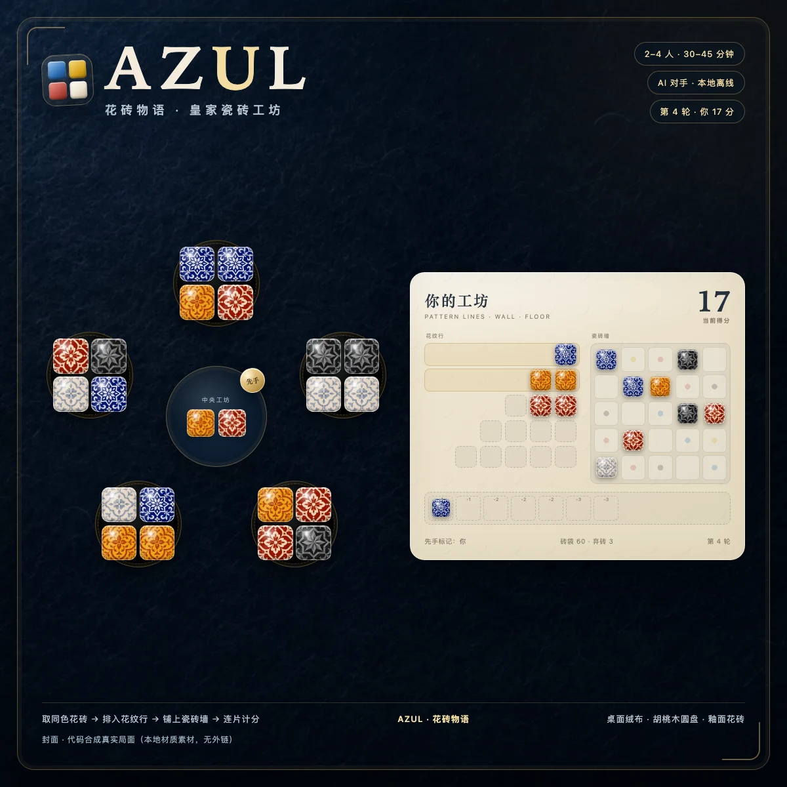

Rules · 2–4 Players · 30–45 min
把安达卢西亚的釉彩，铺进皇家宫墙
《花砖物语 Azul》是一款以葡萄牙阿兹勒茹瓷砖为灵感的抽象策略桌游。玩家轮流从圆盘与中央工坊取走同色花砖，先将它们排进自己的花纹行，再在回合结束时把完成的行移上瓷砖墙。墙面横竖连片会立刻得分，地板会扣分；当有人率先铺满一整行墙面，游戏在这一轮结束后进入终局奖励结算。

一、配件与开局
基础版共有 5 种颜色 × 20 枚 = 100 枚花砖，颜色为湖蓝、柠黄、朱红、墨黑、瓷白。每位玩家拿一块玩家板，把计分标记放在 0 分；玩家板左侧是容量 1 到 5 的花纹行，右侧是 5×5 的瓷砖墙，底部是 7 格地板。
圆盘数量随人数变化：2 人用 5 个圆盘、3 人用 7 个、4 人用 9 个，每个圆盘随机放 4 枚花砖。把先手标记放在中央工坊，最近去过葡萄牙的玩家先手；之后由拿到先手标记的玩家开始下一轮。
二、每轮三个阶段

1. 圆盘供应（Factory Offer）
从先手玩家开始，按顺时针轮流行动。轮到你时，必须从以下两种取法中选择一种：
- 从一个圆盘取走所有同色花砖，该圆盘剩下的花砖全部推入中央工坊。
- 从中央工坊取走所有同色花砖。如果你是本轮第一个从中央工坊取砖的人，还会拿走先手标记，把它放在自己地板最左边的空格；先手标记占 1 格，并且计入地板罚分。
随后，把这批花砖放进一条花纹行。花纹行必须满足三个条件：行内已有花砖必须同色；行内花砖数量不能超过该行容量；墙面同一行已经放过这种颜色时，不能再把该颜色放进对应花纹行。多出来的花砖必须放进地板；你也可以主动把整批花砖全部放地板，即使花纹行仍然可用。
地板从左侧开始填格。超过 7 格的花砖不再留在玩家板上，放回盒盖暂存，之后会在砖袋耗尽时重新混入。当中央工坊与所有圆盘都清空时，本阶段结束。
2. 墙面铺贴（Wall-tiling）
所有玩家同时结算。从最上面一行开始，凡是已经填满的花纹行，都把最右侧一枚花砖移到墙面上对应颜色的格子，并立刻计分：
- 新砖上下左右都没有相邻砖：得 1 分。
- 横向有连片：横向连通数（含新砖）计分；纵向有连片：纵向连通数（含新砖）计分。
- 横向和纵向同时有连片：两部分分数相加。例如横向 3 枚、纵向 3 枚，就得 6 分。
完成的花纹行在移走最右侧花砖后，剩余花砖全部放回盒盖；未完成的花纹行不结算，花砖留在板上进入下一轮。最后结算地板罚分：从左到右依次为 -1、-1、-2、-2、-2、-3、-3，先手标记按普通地板砖计分。分数最低扣到 0，不会变成负数。地板砖放回盒盖，先手标记则回到持有者面前。
3. 准备下一轮
如果还没有人完成一整行 5 枚墙砖，就准备下一轮：先手玩家从砖袋给每个圆盘补 4 枚花砖。砖袋空了，就把盒盖里的花砖重新洗混后继续补；如果仍然不够，就尽可能填满，照常开始新一轮。由持有先手标记的玩家先行动。

三、终局与计分
当某一轮墙面铺贴结束后，只要至少一位玩家完成了一整行 5 枚横向墙砖，游戏立即结束。此时在基础分上追加奖励：
总分最高者获胜。若总分相同，比较完整横排数量；还相同就共享胜利。注意：基础版官方平局规则只比较完整横排，不再比较竖列或颜色奖励，这一点在 B 站速成类教程的简介里也有提醒。
四、变体与扩展
灰色玩家板变体：翻到没有预印颜色的灰色面。铺贴时可以把花砖放到对应墙行的任意空格，但整局结束时，每一竖列都不能出现重复颜色。这个变体更自由，也更考验长线规划。
扩展：B 站教学视频还介绍了《马赛克水晶》（Crystal Mosaic）与《百搭瓷砖》（Joker Tiles）等扩展，它们会增加新的墙面版图、百搭砖与额外计分方式。本单机版先完整实现基础版规则，扩展规则不在当前引擎范围内。
五、五条实用策略
- 优先完成能连片的行。单块孤立砖只有 1 分，横向或纵向连到 3–5 枚时收益成倍增长。
- 提前规划竖列与整色。终局一条完整竖列价值 +7，集齐一色 +10，往往比多拿几块散砖更划算。
- 不要把地板当垃圾桶。地板罚分累积很快；只有在阻挡对手或保住关键行时才值得主动溢出。
- 盯住先手标记。先拿中央工坊的人会吃 1 格地板罚分，但能决定下一轮谁先动；残局时先手可能直接决定谁能先完成整行。
- 观察对手的缺口。如果对手只差一种颜色就能完成大行，尽量先把那种颜色取走，或让它以不划算的数量留在中央。
六、B 站教程检索记录与来源
本页规则先按用户要求用 agent-reach 的 B 站搜索能力检索，再参考公开文字规则核对。检索使用 B 站公开搜索接口与视频详情接口（x/web-interface/search/type、x/web-interface/view），只读取标题、UP 主、时长、简介与公开字幕元数据，没有截图分析、没有 OCR、没有图像识别。
- 【桌游规则】10分钟学会《花砖物语 Azul》！全程动画图解，新手一看就懂 简介列出了完整章节：配件、准备、三阶段、计分、终局奖励与 5 个新手技巧；明确标注 2–4 人、8 岁以上、30–45 分钟、设计师 Michael Kiesling、2018 德国年度游戏。 打开 B 站视频
- 【桌游】花砖物语 AZUL 基础游戏规则介绍 简介说明是“花砖物语基础玩法的规则介绍”，适合作为基础流程的第二路交叉核对。 打开 B 站视频
- 花砖物语｜规则讲解 + 试玩演示 简介强调“颜值爆表、简单易懂、新手能快速上手，还具有策略性”，并包含规则讲解与试玩演示。 打开 B 站视频
- 【桌游速成】1分37秒讲明白《花砖物语》！据说这是世界第一抽象游戏…… 简介补充了三条细碎规则：平局先比完整横行；墙面对应行已有某色时，花纹行不能再放该色；盒子和袋中花砖不足时尽量放满后正常进行。 打开 B 站视频
- 析弈讲规则 #花砖物语 / 8+ / 2-4 / Asmodee 简介标注 8+、2–4 人与 Asmodee 版本信息，作为人数与适龄信息的补充来源。 打开 B 站视频
- 【XIAN在玩桌游#36】花砖物语 Azul & 双扩 Crystal Mosaic & Joker Tiles 简介含章节时间轴：配件、设置、拿瓷砖、铺瓷砖、准备下一轮、游戏结算，以及两款扩展的介绍；推荐人数标注为 2 人。 打开 B 站视频
x/player/v2 字幕元数据时，返回的 subtitles 均为空数组，未拿到公开字幕文本，因此本页没有引用字幕原句，也没有用截图或 OCR 补内容。BoardGameGeek 页面在本机网络返回 403，英文维基百科请求未连通；规则细节改用可访问的公开规则文字页 UltraBoardGames 交叉核对：完整竖列奖励为每条 +7、地板罚分最低扣到 0、未完成花纹行保留、可主动把整批砖放地板、2/3/4 人分别使用 5/7/9 个圆盘。以上均与 B 站简介中的要点一致。七、常见问题 FAQ
花纹行还能放时，我可以故意把花砖丢进地板吗？
可以。官方规则允许玩家“不能或不想”放入花纹行时把花砖放进地板，即使仍有可用花纹行。主动溢出通常用于避免帮对手清空圆盘，或保住自己的行色，但要承担地板罚分。
未完成的花纹行在回合结束时会清空吗？
不会。只有已经填满的花纹行会在墙面铺贴阶段结算：最右侧一枚上墙，其余进盒盖；未完成的行连同花砖留在玩家板上，下一轮继续使用。
先手标记会扣分吗？它最后去哪里？
会。先手标记放在地板时占 1 格，并按该格罚分计入。回合结算后它不进入盒盖，而是回到持有者面前，由该玩家在下一轮先行动。
2 人局到底用几个圆盘？
2 人用 5 个圆盘，3 人用 7 个，4 人用 9 个。很多新手会误以为 2 人只有 5 个以外的特殊数量；本单机版按官方人数表实现。
分数会被地板扣成负数吗？
不会。地板罚分结算后最低为 0 分；终局奖励在基础分上追加。计分轨道上不会出现负分。
横排和竖列同时连片，分怎么算？
分别计算横向连通数和纵向连通数（都包含新放下的这枚砖），两者相加。如果两个方向都没有相邻砖，才只得 1 分。
终局平局怎么判？
先比较完整横排数量，多者获胜；若仍相同则共享胜利。基础版不再比较竖列或颜色奖励。B 站速成视频的简介也特别提醒了“横行较多者胜利，仍平手则共享胜利”。
砖袋和盒盖都空了怎么办？
尽量把能补的圆盘补满后照常开始新一轮；如果完全没有花砖可补，则按当前分数进入结算。单机引擎对这种情况有安全处理，不会卡死。
八、真实件数与绘制口径
按 games/ART-GUIDE.md 的口径，本单机版不生成“氛围位图”，而是先列出真实基础版件数，再由 engine.js 与 CSS/内联 SVG 逐件合成局面。这样墙面、花纹行、地板与圆盘的花砖数量始终和规则一致，不会出现“空盘上两枚子”或件数对不上的情况。
| 组件 | 真实数量 / 规格 | 本实现 |
|---|---|---|
| 花砖 | 100 枚，5 色 × 20 枚 | CSS 渐变 + 高光 + 釉面纹样，逐枚渲染 |
| 圆盘 | 5 / 7 / 9 个（2 / 3 / 4 人），每盘 4 枚 | 按人数动态生成并环形排布 |
| 花纹行 | 每人 5 条，容量 1–5 | 从右向左填砖，满行高亮 |
| 瓷砖墙 | 5×5，每行每列五色各一次 | 拉丁方公式生成目标色 |
| 地板 | 7 格，罚分 -1 -1 -2 -2 -2 -3 -3 | 先手标记占格并计罚分 |
| 中央工坊 | 先手标记 1 枚 + 溢入花砖 | 按颜色分堆，显示数量 |
绘制口径：所有花色、字符、圆盘、玩家板与完整局面均由代码生成；不下载视频、不使用 OCR、不使用 AI 位图。中文衬线标题使用 Songti SC Bold(700)，不使用 900 字重，以避免常用汉字缺字；正文使用系统无衬线字体栈。
九、关于本实现
本页与配套游戏为纯前端单机 + 零依赖 Node 联机服务：规则引擎是独立的 UMD 模块，页面使用 SVG/CSS 绘制花砖、圆盘、玩家板与瓷砖墙，WebAudio 实时合成音效，不加载任何外部字体、图片、CDN 或追踪脚本。默认 2 人对 AI，也可切换到 3 人或 4 人；联机模式从 联机房间 进入，支持邀请链接、AI 补位、断线重连与超时托管。
规则文本依据 B 站教程简介、公开规则文字页与官方基础版流程整理；若与实体规则书存在版本差异，以实体规则书为准。教程来源仅用于规则学习与交叉核对，视频版权归各 UP 主所有。封面、OG 与详情图由 art-render.html 用本地 img-gen 单物件素材代码合成；完整局面、件数、分数与墙面均由代码绘制，不直接生成整张局面图。